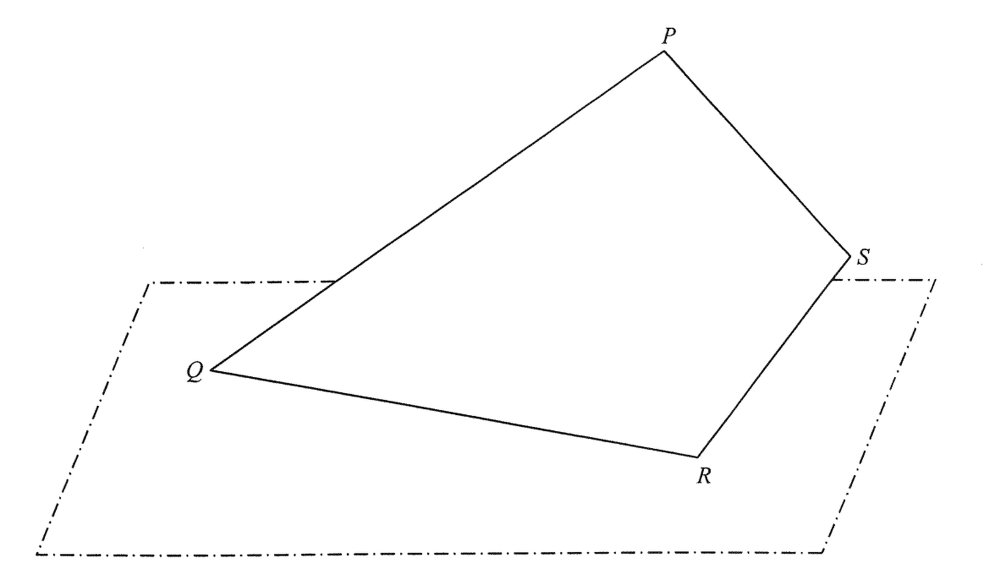
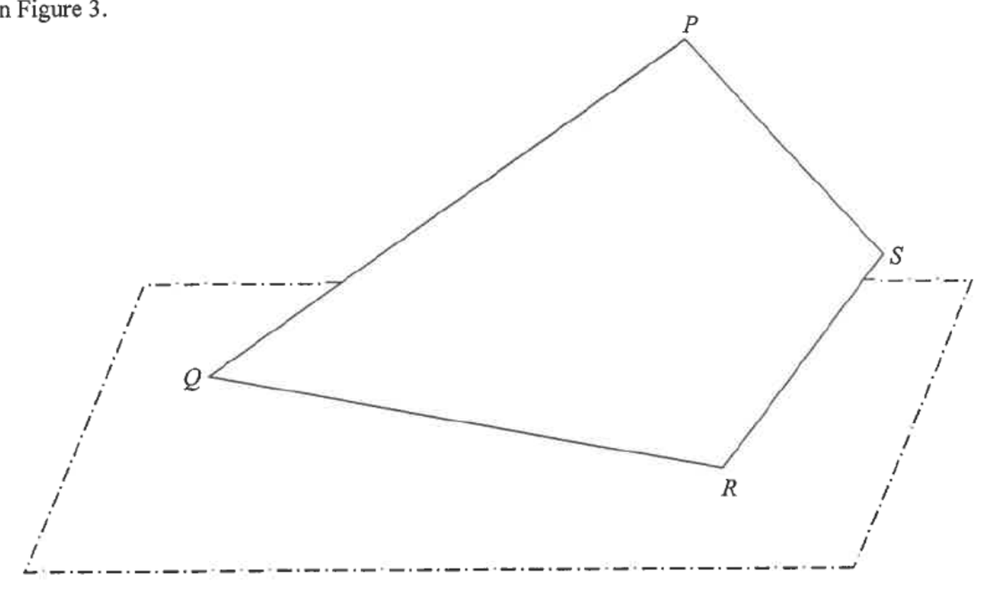
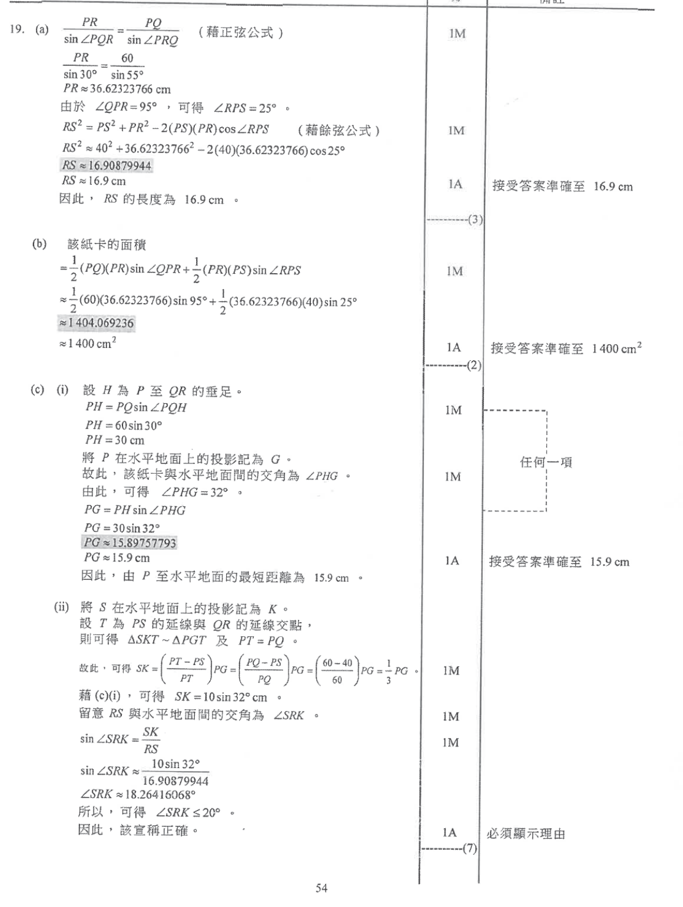

2020 DSE 數學 P1 Q19 答案＋詳解
題目（中文卷）
$PQRS$ 為四邊形紙卡，其中 $PQ = 60\, \text{cm}$ 、 $PS = 40\, \text{cm}$ 、 $\angle PQR = 30^\circ$ 、 $\angle PRQ = 55^\circ$ 及 $\angle QPS = 120^\circ$ 。把該紙卡懸掛且 $QR$ 位於水平地面上，如圖 3 所示。

(a) 求 $RS$ 的長度。 (3 分)
(b) 求該紙卡的面積。 (2 分)
(c) 已知該紙卡與水平地面間的交角為 $32^\circ$ 。
(i) 求由 $P$ 至水平地面的最短距離。 (7 分)
(ii) 某學生宣稱 $RS$ 與水平地面間的交角至多為 $20^\circ$ 。該宣稱是否正確？試解釋你的答案。
試卷完 —
English version（英文卷題目）
PQRS is a quadrilateral paper card, where PQ = 60 cm, PS = 40 cm, ∠PQR = 30°, ∠PRQ = 55° and ∠QPS = 120°. The paper card is held with QR lying on the horizontal ground as shown in Figure 3.

(a) Find the length of RS. (3 marks)
(b) Find the area of the paper card. (2 marks)
(c) It is given that the angle between the paper card and the horizontal ground is 32°.
(i) Find the shortest distance from P to the horizontal ground. (3 marks)
(ii) A student claims that the angle between RS and the horizontal ground is at most 20°. Is the claim correct? Explain your answer. (7 marks)
試卷完 —
官方評卷參考（Marking Scheme）

考評報告
良好。很多考生能利用餘弦公式求得RS的長度。平平。很多考生未能把四邊形分成兩個三角形來求該紙卡的面積。平平。很多考生誤以PR與水平地面間的交角為32°,因此他們誤以為由P至水平地面的最短距離是$PR\sin 32^\circ$。甚差。超過90%考生未能求得RS與水平地面間的交角,因此他們於解釋為什麼RS與水平地面間的交角至多為20°時出現困難。
相關課題
技能分析（呢題考咩、陷阱喺邊）
- 主課題
- 圓形幾何
- 相關課題
- 圓形幾何、求積法